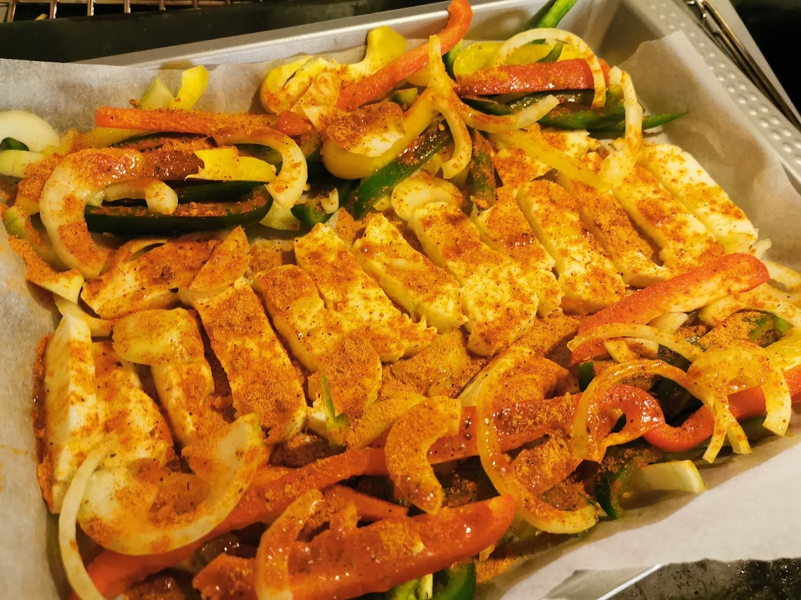

Fajitas

Beskrivelse
Fajitas med halloumi, saftig, raskt, enkelt og godt!
Ingredienser
2 personer
- 250 gram halloumi
- 2-3 stk paprika (gjerne i ulike farger)
- 1 stk løk
- fajitas tacokrydder, Santa Maria sin er god!
- lime
- standard tacotilbehød: guacamole, lefser, salat, salsa,rømme osv.
Fremgangsmåte
- Sett ovnen på 200 grader celcius og kle et bakebrett med bakepapir.
- Kutt halloumi, paprika og løk i strimler.
- Fordel halloumi, paprika og løj over bakebrettet. Dryss over krydder og skvis over litt lime.
- Stek midt i ovnen i 20-25 minutter (følg med, halloumien skal bli gyllen og fin).
- Mens halloumien er i ovnen, lag klar tilbehøret.
- Nyt maten!
Tilbake til forsiden